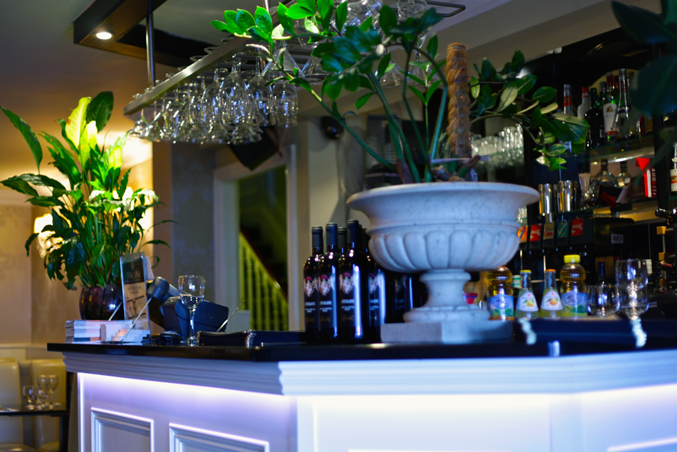
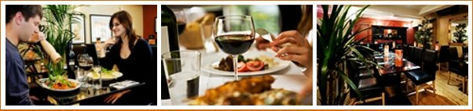

Italian Restaurant & Pizzeria
Open 7 Days from 12 noon till Late
Welcome to TOSCANA City Centre Dublin Ireland - Toscana Italian
restaurant and Pizzeria on Dame Street is among the most popular
Italian restaurants in Dublin City Centre. Established over a
decade ago, our Dublin restaurant is ideally located in the Temple
Bar district with views of Dublin Castle and City Hall. This great
central location boasts dublins best bars and luxury hotels. Toscana
has become an icon for locals and pre-theatre diners with Vicar Street,
the Olympia, Gaiety and Tivoli theatres close by.
Toscana Dame Street opened in 2002, the same year PJ and Dee Butuci renovated an old farmhouse in Wicklow, with the intention of growing fresh produce for their new Italian restaurant in Dublin. "We are proud of being one of the first farm-to-table restaurants", say the Butucis. Our passion for growing has intensified over the past 10 years as our customers enjoyed what we produced and so demand grew naturally. The farmhouse gardens are an integral part of our philosophy towards cooking and healthy lifestyle, and we believe that our customers should eat as well as we do at home. Avoiding any nasty sprays, using organic farm eggs from our corn-fed hens, we grow up to 70% of our own organic fruit vegetables salads and herbs, and we pride ourselves on honest seasonal produce packed with nutrients. Combining our fertile Irish soil with the rich heritage of classic and modern Italian cuisine. Anyone who has visited Toscana Restaurant city centre knows that we strive to offer only the very best to our guests.' - Buon Appetito!
Toscana Dame Street opened in 2002, the same year PJ and Dee Butuci renovated an old farmhouse in Wicklow, with the intention of growing fresh produce for their new Italian restaurant in Dublin. "We are proud of being one of the first farm-to-table restaurants", say the Butucis. Our passion for growing has intensified over the past 10 years as our customers enjoyed what we produced and so demand grew naturally. The farmhouse gardens are an integral part of our philosophy towards cooking and healthy lifestyle, and we believe that our customers should eat as well as we do at home. Avoiding any nasty sprays, using organic farm eggs from our corn-fed hens, we grow up to 70% of our own organic fruit vegetables salads and herbs, and we pride ourselves on honest seasonal produce packed with nutrients. Combining our fertile Irish soil with the rich heritage of classic and modern Italian cuisine. Anyone who has visited Toscana Restaurant city centre knows that we strive to offer only the very best to our guests.' - Buon Appetito!

